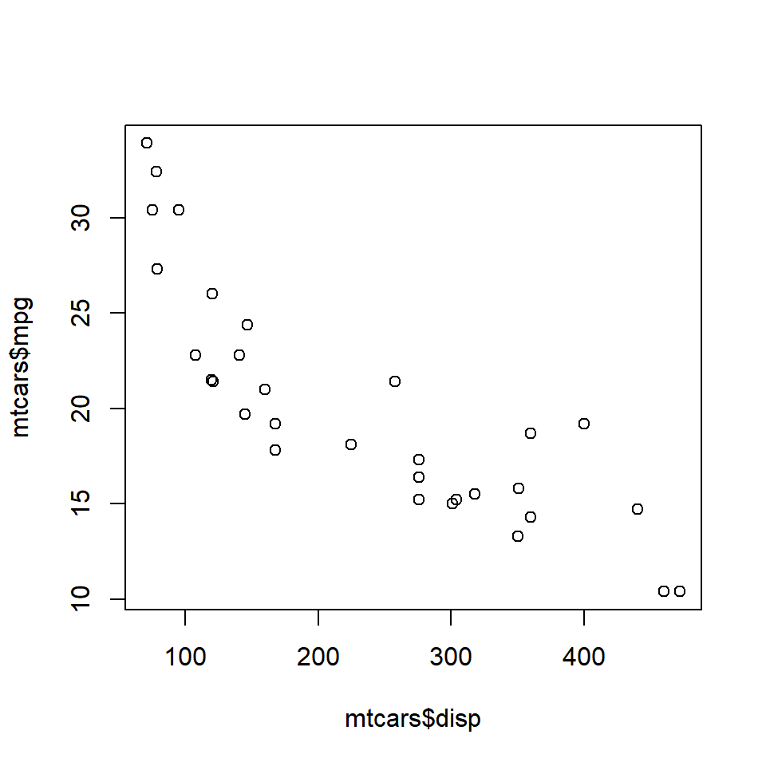
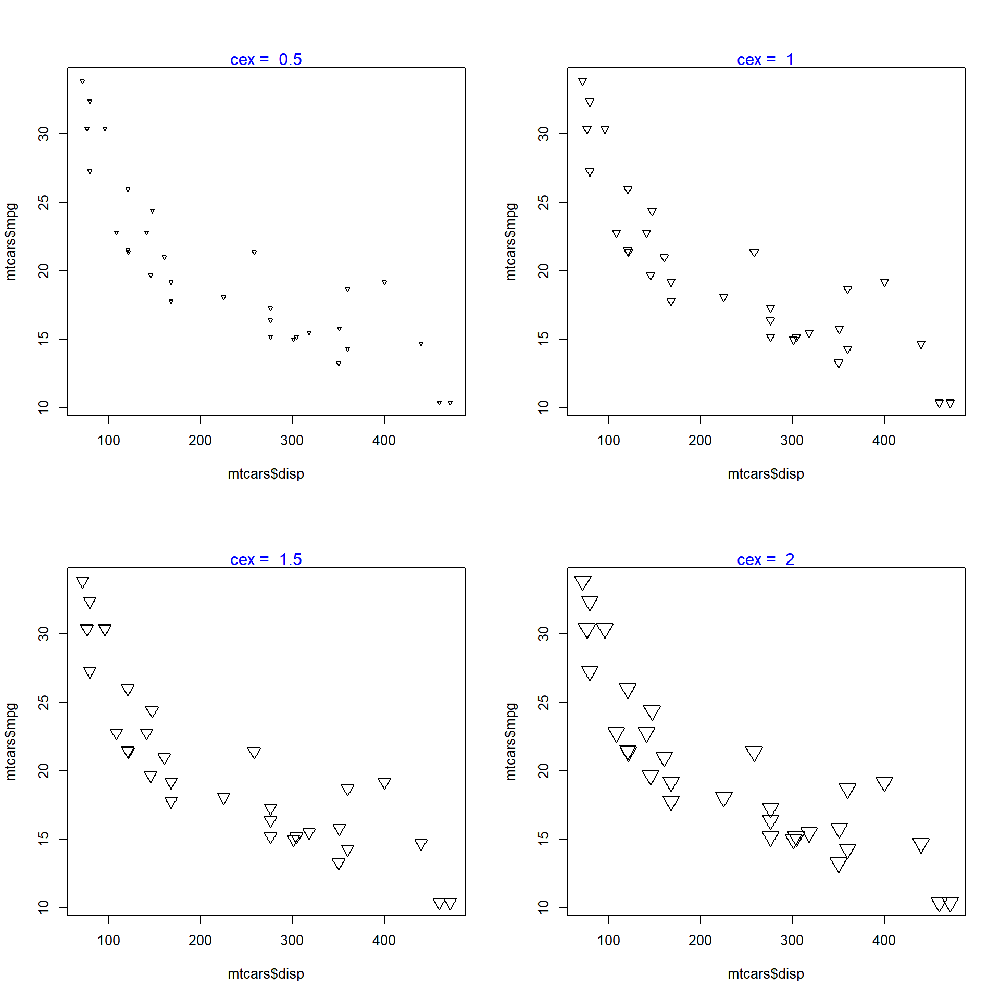
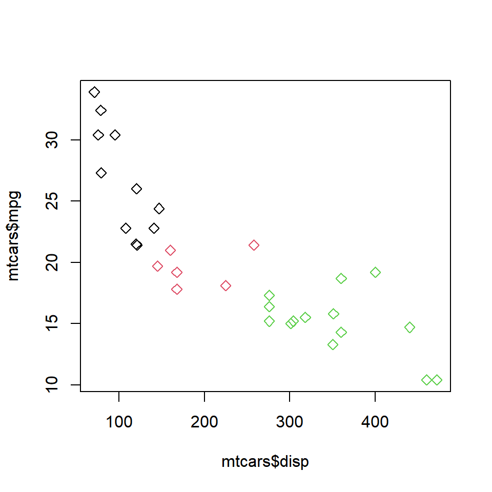

Chapter 3 Scatter Plots
3.1 Introduction
In this chapter, we will learn how to create scatter plots.
- adding color to the points
- modify shape of the points
- modify size of the points
3.2 Basic Plot
Let us recreate the plot that we had created in the first post by using the mtcars data set. We will use the disp (displacement) and mpg (miles per gallon) variables. disp will be on the X axis and mpg will be on the Y axis.

We have created a very basic plot and any one looking at it for the first time will get confused with the axis labels mtcars$disp and mtcars$mpg. Let us put into practice what we learnt in the second post, and add a title to the plot, and make the axis labels more meaningful.
plot(mtcars$disp, mtcars$mpg,
main = 'Displacement vs Miles Per Gallon',
xlab = 'Displacement', ylab = 'Miles Per Gallon')
Now the plot clearly communicates that it represents the relationship between the displacement and mileage of cars. Now the color of the points in the plot is black by default. Some of us may agree that black is beautiful but not all of us will like it. As a first step in enhancing the way our plot looks, let us change the shape of the points.
3.3 Shape
The shape of the point can be specified using the pch argument. It will take values between 0 and 25. Below is an example:

Let us check out a few of the other shapes:

We can specify the shape based on a third (categorical variable as well). In the below plot, the shape is based on the levels of the categorical variable cyl (number of cylinders) from the mtcars data set:
# shape based on number of levels of a third variable
plot(mtcars$disp, mtcars$mpg, pch = nlevels(factor(mtcars$cyl)))
# shape based on a third categorical variable
plot(mtcars$disp, mtcars$mpg, pch = unclass(mtcars$cyl))
3.4 Size
The size of the points in the scatter plot can be specified using the cex argument in the plot() function. The default value for cex is 1.

The below plots show the size of the points for values relative to 1.

3.5 Color
We can specify a border color for the points using the col argument and a background color using the bg argument. The background color can be specified only for points whose pch argument takes values between 21 and 25. Let us look at some examples to understand this distinction between border and background color.

You can observe that although we have specified a background color using the bg argument, we do not see the red background color as the value specified for the pch (shape) argument is not between 21 and 25. In the next example, we will use a value between 21 and 25 so that the pch argument is effective.

The color of the points can be specified using (levels) of a categorical variable as well. In the next example, we will use the cyl variable to specify the color of the points.

Since cyl is a categorical variable with 3 levels, we can see that the points now have 3 different colors. The above method is useful when you want to segregate the points in a scatter plot based on a third variable.